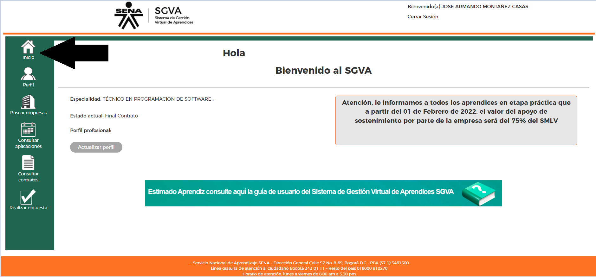
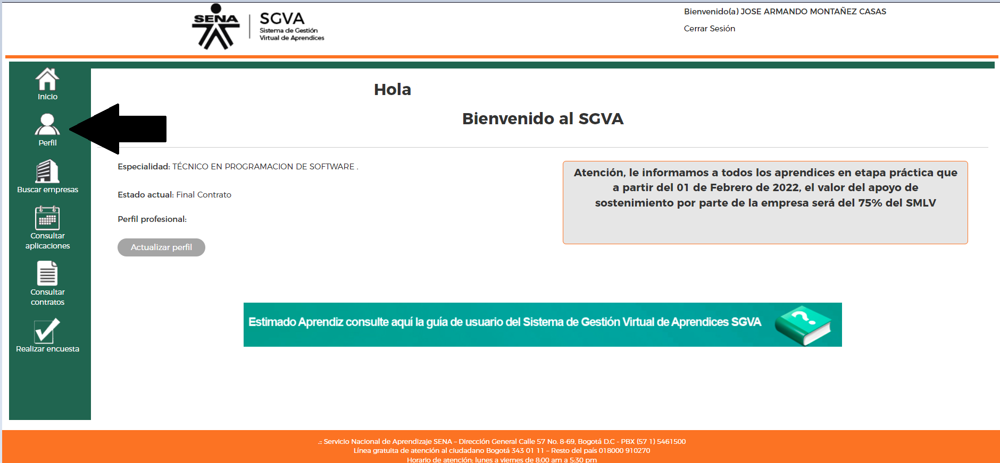
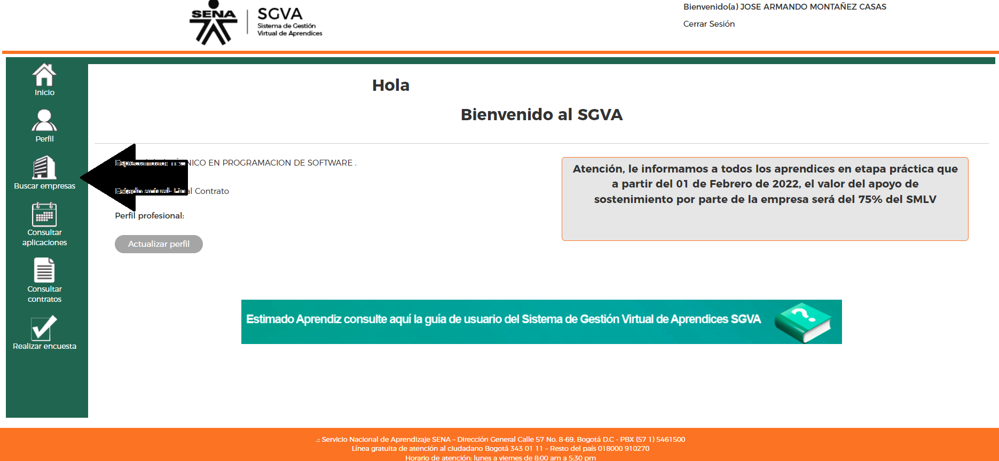
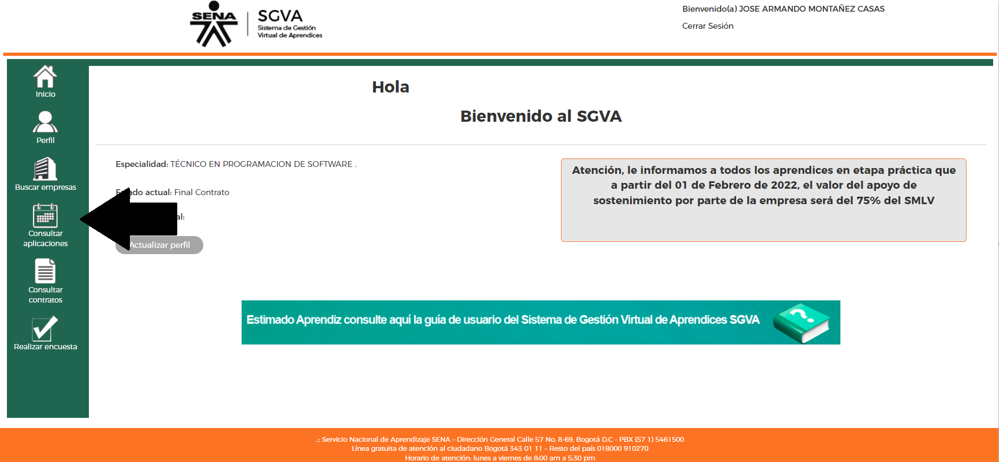
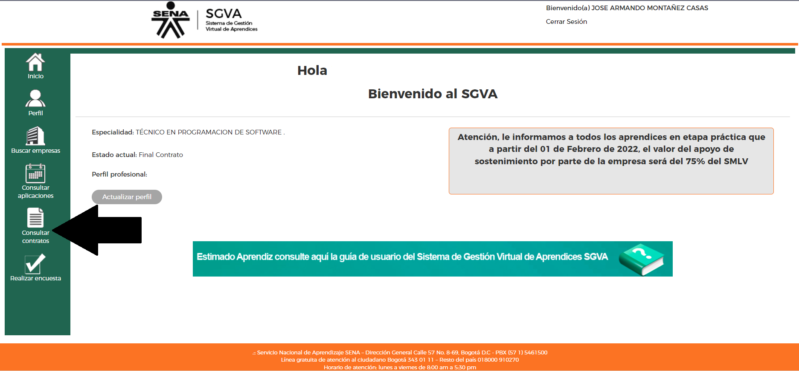
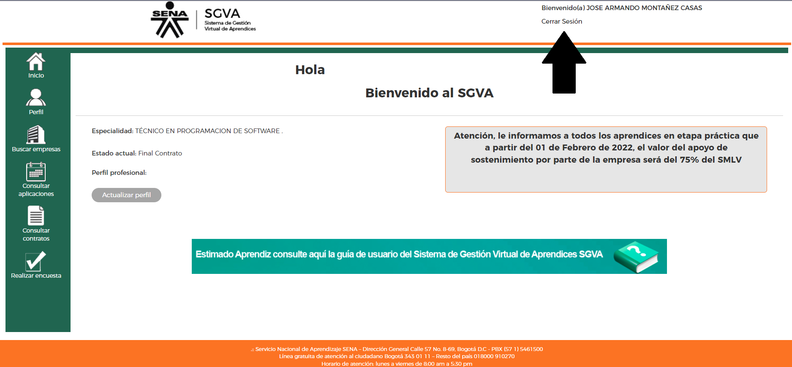

La etapa productiva del programa de formación es aquella en la
cual
el Aprendiz SENA aplica, complementa, fortalece y consolida
sus
competencias, en términos de conocimiento, habilidades,
destrezas, actitudes y valores.
La etapa productiva debe permitirle al Aprendiz aplicar en la
resolución de problemas reales del sector productivo, los
conocimientos, habilidades y destrezas pertinentes a las
competencias del programa de formación, asumiendo estrategias
y
metodologías de autogestión.
Es importante recordar que la etapa práctica es un requisito
para
certificarse y que puede realizarse en un tiempo máximo de 2
años,
una vez terminada la fase lectiva.
Proceso en el cual se buscaba evidenciar y evaluar el desarrollo de
las etapas productiva. Por medio de un instructor de seguimiento.
El SENA evaluara Periódicamente las diferentes alternativas de etapa
productiva, como parte del seguimiento y evaluación permanente en el
marco del mejoramiento continuo, y como estrategia de aseguramiento
de la calidad de la formación profesional integral.
El contrato de aprendizaje es una figura de contratación
a través del cual una persona natural recibe formación
teórica en una entidad autorizada, con el patrocinio de
una empresa donde el aprendiz desarrollara, actividades
propias de su area y el reconocimiento de un apoyo
de sostenimiento económico, el cual en ningún caso
constituye salario.
CONTRATO DE APRENDIZAJE
en las diferentes
empresas obligadas
y/o voluntarias, incluido el SENA.
MONITORIAS
De acuerdo con la reglamentación
establecida en la institución para los
procesos de aprendizaje, en las
especialidades que son a fines
tecnológicamente a su programa de
formación en un centro de formación
APOYO A UNA INSTITUCIÓN ESTATAL
NACIONAL, O A UNA ONG
para el
desempeño de actividades practicas
asociadas a su programa de formación o
desarrollo de un proyecto productivo
en un ambiente de formación facilitado
por una institución.
PASANTÍAS
Entre las cuales se contempla la asesoría pymes.
PARTICIPACIÓN EN UN PROYECTO
PRODUCTIVO
Cuando se definen
los proyectos en el marco de un programa
de formación y estos posibilitan la simulación
de entornos productivos reales y
la aplicación de los conocimientos,
habilidades y destrezas pertinentes a
las competencias del programa.
APOYO A UNA UNIDAD PRODUCTIVA
Donde el
aprendiz pueda
aplicar en las actividades que desarrolla
las competencias adquiridas durante su
proceso de formación.
VINCULACIÓN LABORAL O CONTRACTUAL
En
relacionadas con el programa de
formación de conformidad con la
normativa dispuesta para contratos
de aprendizajes
Cuando se registra una suspension,
la fecha de terminación inicial del
contrato, cambia automáticamente
en razón a los Dias de dicha
suspension.
*Vacaciones por parte del empleador
(solo aplica para aprendices en etapa
productiva)
*Caso Fortuito o fuerza mayor.
*Licencia de Maternidad.
*Incapacidad certificada
por la EPS.
*Mutuo Acuerdo
*Incumplimiento de Obligaciones.
*Faltas Disciplinarias.
*Cancelación de Matricula.
Si tu estado en el aplicativo
Gestión Virtual de aprendices es:
Inhabilitado por Actualización
La empresa no ve su perfil o si ya
tiene contrato no podrán registrarlo.
Ingrese al aplicativo mínimo una vez
por semana , actualice sus datos y
gestione su contrato de aprendizaje.
http://caprendizaje.sena.edu.co
Usuario : número de identificación
Clave : aprendizesena o la que el aprendiz
le haya asignado .
Lectiva : EPS + 50 % SMMLV
Productiva : EPS + ARL
-Apoyo de sostenimiento ( 100 %
SMLV ) .
-Campo practico de aplicación
en actividades propias de la relación
de aprendizaje .
-Reportar cualquier novedad
sobre el desempeño técnico y
actitudinal del aprendiz .
Lectiva : cumplir con el
reglamento del aprendiz y
con las competencias de la
formación .
Productiva : Cumplir con el
horario de trabajo estipulado ,
acogerse a las políticas de la
empresa , reportar al SENA
cualquier novedad que influya
en el desarrollo normal de las
practicas .
* Los aprendices seleccionados por la empresa para la firma de
contratos de
aprendizaje , no deben tener o haber tenido vinculo laboral con la
empresa
patrocinadora .
* La jornada laboral no podrá superar las 8 horas diarias , ni las
48 semanales de
lunes a sábado .
* Gestionar oportunamente su registro en el SGVA para optar por
Contrato de
Aprendizaje .
* Actualizar los datos que registra en el sistema
* Verificar que correspondan a los registrados en el sistema
* Consultar oportunidades de contrato que reportan los
empresarios
* La etapa práctica es un requisito para la certificación de titulo
, y debe realizarse en un máximo de 24 meses , después de terminada
la etapa lectiva .
El aprendiz recibirá un apoyo de sostenimiento mensual que sea como mínimo en la fase práctica el equivalente a un 75 % de un ( 1 ) salario mínimo mensual vigente y deberá estar cubierto por el sistema de seguridad social en salud y la cotización será cubierta plenamente por la empresa patrocinadora , sobre la base de un salario mínimo legal mensual vigente , además deberá ser afiliado al sistema de riesgos profesionales por la Administradora de Riesgos Profesionales -ARP , que cubre la empresa patrocinadora .
El aprendiz recibirá un apoyo de sostenimiento mensual que sea como mínimo en la fase práctica el equivalente a un 75 % de un ( 1 ) salario mínimo mensual vigente y deberá estar cubierto por el sistema de seguridad social en salud y la cotización será cubierta plenamente por la empresa patrocinadora , sobre la base de un salario mínimo legal mensual vigente , además deberá ser afiliado al sistema de riesgos profesionales por la Administradora de Riesgos Profesionales -ARP , que cubre la empresa patrocinadora .
Para conseguir tu contrato de aprendizaje es necesario mantener tu
estado
activo enhttp://caprendizaje.sena.edu.co
, de lo contrario las empresas
interesadas no podrán visualizar tu perfil . Recuerda que el
aplicativo te
deshabilita si no ingresas cada 15 Dias .
1.Ingresa a la página por el siguiente link .
A través de internet , ingresa en la dirección el siguiente link
que te llevará a la página directamente .
http://caprendizaje.sena.edu.co
2. Si es tu primera vez
Si es la primera vez que ingresas , el Sistema te solicita los
siguientes datos :
Número de identificación : documento con el que hiciste el
registro en SofiaPlus .
Contraseña : ingresa con aprendizsena
Esta opción podrá agregar su perfil de salida y observar las empresas , que lo han citado en la bandeja de entrada .
En esta opción podrá actualizar sus datos personales y modificar su contraseña ( se recomienda agregar celular )
Aquí podrá ver todas las empresas que requieran su perfil y ponerse en contacto con ellas .
En esta opción podrá observar las empresas a las que aplicó y / o lo han citado para patrocinio .Esta opción podrá agregar su perfil de salida y observar las empresas , que lo han citado en la bandeja de entrada .
En esta opción podrá observar las empresas a las que aplicó y / o lo han citado para patrocinio ..
En esta opción podrá observar las empresas a las que aplicó y / o lo han citado para patrocinio .
Si el aprendiz al dar click en la opción buscar empresa le aparece de color naranja debe cambiar su estado dando click en la siguiente opción Ver editar detalle de entrevista
El Aprendiz debe dar click en la opción editar detalle de entrevista.
El aprendiz debe colocar la cual por la cual considera que no fue aceptado
Finalmente vuelva a la opción buscar empresas,
para ponerte en contacto con ella.
Si el aprendiz se encuentra en la opción inicio y en la bandeja
de entrada hay una citación de empresa debe darle click y
seguir el paso 2.
aquí el aprendiz puede ver los datos de la empresa
que lo ha citado y ponerse en contacto con ella.
si al momento de contactarse el aprendiz,
con la empresa, esta no se encuentra
interesada en el, dar click en
ver editar
detalle de entrevista
para cerrar proceso o
solicitar a la empresa que la cierre.
Artículo 30 de la ley 769 de 2002 establece la naturaleza y características de la
relación de aprendizaje , en concordancia con el articulo 1 ° del Decreto 933
de 2003 , los cuales contienen los siguientes elementos .
* El contrato de aprendizaje es una forma especial de vinculación dentro del derecho
laboral .
* La subordinación está referida exclusivamente a las actividades propias del
aprendizaje .
* Mediante esta relación de aprendizaje una persona desarrolla formación teórica
práctica , vale decir , desarrolla una fase lectiva y una fase práctica o productiva , a
cambio de que una empresa patrocinadora proporcione los medios durante las
dos fases o etapas , para adquirir la formación profesional metódica y completa
requerida para el oficio u ocupación .
* Esta formación le permite al aprendiz desempeñarse dentro del manejo
administrativo , operativo comercial o financiero propios del giro ordinario
de las actividades de la empresa .
* En este orden de ideas , el aprendiz es un estudiante y por ende no le asisten los
derechos y deberes comunes a los trabajadores , por cuanto no hay vínculo o relación
laboral con la empresa patrocinadora .
* El contrato de aprendizaje debe ser por escrito y se circunscribe por el término
establecido en el diseño curricular del oficio , en el que se forme el aprendiz incluidas
las dos etapas de formación .
* La duración máxima de la relación de aprendizaje es de dos años .
* Durante todo el contrato de aprendizaje , el empresario debe cancelar el apoyo
de sostenimiento , de acuerdo a los porcentajes establecidos por la ley , el cual tiene
como fin garantizar el proceso de aprendizaje y en ningún caso constituye salario .
Correo:
ygutierrez@sena.edu.co ,
segumietoepm@misena.edu.co
Celular:31089894333
Correo: solobitacoras.sena.cnca@gmail.com
Celular:3006751162
Correo: jpzuluaga0@misena.edu.co
Celular:3003498968
Correo: nathalierosado@misena.edu.co
Celular:3012336072
Correo: ksmedina6@misena.edu.co
Celular:3114820395
Correo: emejiasonett@hotmail.com
Celular:3013921649
Correo: resquivel@misena.edu.co
Celular:3136547389
Correo: ortizbonell@gmail.com
Celular:3166900764649
Correo: daespa@misena.edu.co
Celular:3135056314